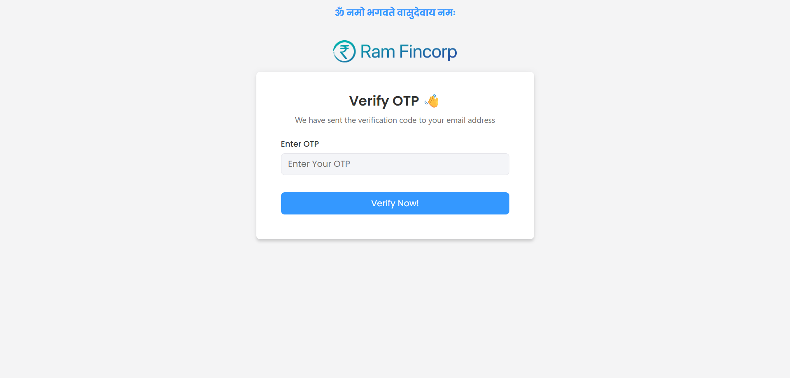
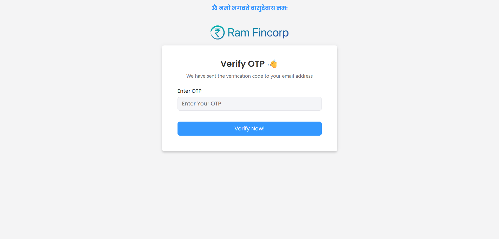

-
Search Filter Testing
9:54:34 AM / 00:02:11:491 Fail
Search Filter Testing
07.04.2025 9:54:34 AM 07.04.2025 9:56:46 AM 00:02:11:491 · #test-id=1FailSuccessful LognFailSuccessful LognWhen the user is in the CRM pageHooks.Hooks.addScreenshot(io.cucumber.java.Scenario)Successful Logn And the user should test Search filter by passing Name,MobileNo,CustID,LeadID,LoanNo,Email,PAN,Aadhar,with excel row "1"Step skippedFailSuccessful LognWhen the user is in the CRM pageHooks.Hooks.addScreenshot(io.cucumber.java.Scenario)Successful LognAnd the user should test Search filter by passing Name,MobileNo,CustID,LeadID,LoanNo,Email,PAN,Aadhar,with excel row "2"Step skippedFailSuccessful LognWhen the user is in the CRM pageHooks.Hooks.addScreenshot(io.cucumber.java.Scenario)Successful Logn
And the user should test Search filter by passing Name,MobileNo,CustID,LeadID,LoanNo,Email,PAN,Aadhar,with excel row "1"Step skippedFailSuccessful LognWhen the user is in the CRM pageHooks.Hooks.addScreenshot(io.cucumber.java.Scenario)Successful LognAnd the user should test Search filter by passing Name,MobileNo,CustID,LeadID,LoanNo,Email,PAN,Aadhar,with excel row "2"Step skippedFailSuccessful LognWhen the user is in the CRM pageHooks.Hooks.addScreenshot(io.cucumber.java.Scenario)Successful Logn And the user should test Search filter by passing Name,MobileNo,CustID,LeadID,LoanNo,Email,PAN,Aadhar,with excel row "3"Step skippedFailSuccessful LognWhen the user is in the CRM pageHooks.Hooks.addScreenshot(io.cucumber.java.Scenario)Successful LognAnd the user should test Search filter by passing Name,MobileNo,CustID,LeadID,LoanNo,Email,PAN,Aadhar,with excel row "4"Step skipped
And the user should test Search filter by passing Name,MobileNo,CustID,LeadID,LoanNo,Email,PAN,Aadhar,with excel row "3"Step skippedFailSuccessful LognWhen the user is in the CRM pageHooks.Hooks.addScreenshot(io.cucumber.java.Scenario)Successful LognAnd the user should test Search filter by passing Name,MobileNo,CustID,LeadID,LoanNo,Email,PAN,Aadhar,with excel row "4"Step skipped
-
com.mysql.cj.jdbc.exceptions.CommunicationsException
4 tests
com.mysql.cj.jdbc.exceptions.CommunicationsException
4 failedStatus Timestamp TestName Fail 09:54:38 AM When the user is in the CRM page Search Filter Testing.Successful Logn.When the user is in the CRM pageFail 09:55:10 AM When the user is in the CRM page Search Filter Testing.Successful Logn.When the user is in the CRM pageFail 09:55:41 AM When the user is in the CRM page Search Filter Testing.Successful Logn.When the user is in the CRM pageFail 09:56:16 AM When the user is in the CRM page Search Filter Testing.Successful Logn.When the user is in the CRM page
Started
Jul 4, 2025 09:54:34 AM
Ended
Jul 4, 2025 09:56:46 AM
Features Passed
0
Features Failed
1
Features
Scenarios
Steps
Timeline